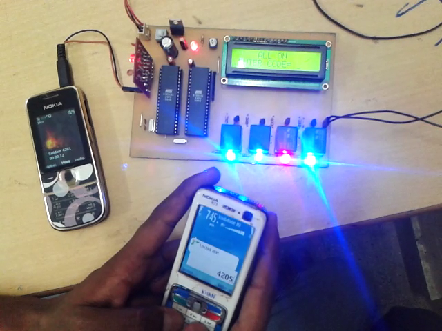
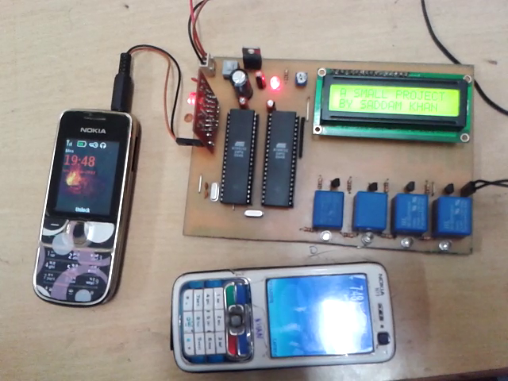
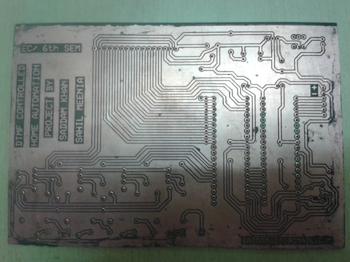

Por: Saddam Khan
Este proyecto esta basado en DTMF, el cual es generado en telefonos moviles. Con esto se podran controlar los dispositivos electricos del hogar que esten incluidos en el circuito. Abajo se observa el teclado DTMF. CUando se presiona alguna tecla se genera una frecuencia que surge de mezclar dos frecuencias. Luego es enviada al receptor y luego al canal de comunicacion

La seanl generada por el telefono, la cual fue activada por el usuario es enviada al decodificador el cual envia una senal al microcontrolador por el canal de comunicacion. Dependiendo de la senal que reciba el microcontrolador se activaran sus salidas asi como tambien se mostraran mensajes en la pantalla LCD
Este sistema esta disenado para controlar los dispositivos, incluye un telefono celular que se conecta al sistema a traves de un cable adaptador jack. Para activar la parte del sistema de telefonia movil del sistema, se debe realizar una llamada y, a medida que se responde, el usuario ingresara una contrasena de tres / cuatro (como quiera) para acceder al sistema y controlar los dispositivos. A medida que la persona que llama presione la contrasena especifica, resulta en ENCENDER o APAGAR un dispositivo especifico. La conmutacion del dispositivo se logra mediante reles
En este sistema realizamos un circuito en tres partes principales, uno es un decodificador DTMF, un segundo transmisor que acepta la salida del decodificador y el tercero es un receptor que acepta la entrada del transmisor y conectamos nuestros dispositivos de control como TV, Ventilador, CA, Mezclador, Bombilla etc como queremos controles. En este circuito, utilizamos comunicacion en serie entre 8951 microcontroladores para transferir el codificado del transmisor al receptor. Esto significa en el circuito una segunda parte del transmisor en serie hecho en circuito que envia datos codificados en serie y la tercera parte del circuito hecha en serie recibe que recibe los datos transmitidos en serie en serie. Alguna contrasena ya definida en la tercera parte del circuito. Cuando el receptor recibe cualquier entrada del transmisor, compara los datos de entrada con los datos almacenados o definidos. Si se encuentra una coincidencia, entonces activa un dispositivo relacionado o particular, podemos ver la operacion particular en la pantalla LCD de 16x2. En este circuito, utilice el led en lugar del electrodomestico. En el codigo almacenamos datos de longitud 4.
Ejemplo de esto:
Imagenes del circuito:
  Descarga ZIP volver al inicio